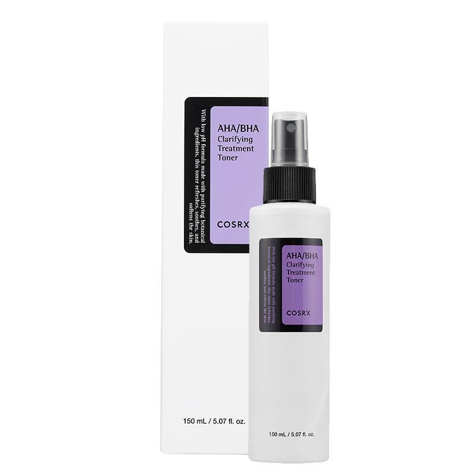
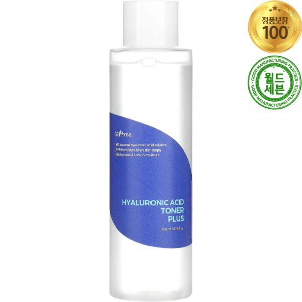
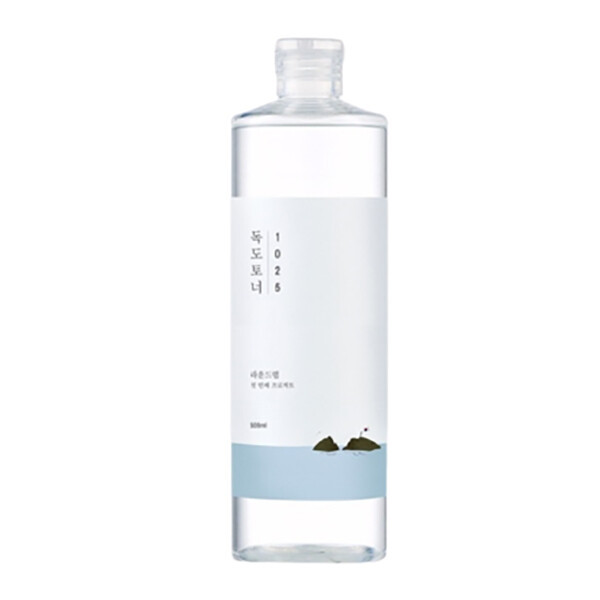

Home › Korean Toner
6 Best Korean Toners for Glass Skin (2026)
The Korean toners I keep coming back to
I rounded up 6 Korean toner worth knowing — the ones K-beauty fans keep coming back to. Real products, honest notes, and roughly what they cost. Prices are approximate; check the retailer for today's price.

Heartleaf 77% Soothing Toner
Calming heartleaf toner for redness and hydration.
77% heartleaf water to calm redness and add lightweight hydration. A gentle daily toner that suits sensitive and combination skin.
≈ $20.0 (approx) · Ships worldwide
Check price on Amazon →
AHA BHA Clarifying Treatment Toner
Mild exfoliating toner to smooth texture.
A mild AHA/BHA toner that gently smooths texture and helps keep pores clear. Use a few times a week and always follow with sunscreen.
≈ $16.0 (approx) · Ships worldwide
Check price on Amazon →
Ginseng Essence Water
Ginseng essence-toner for a nourished glow.
A ginseng essence-toner that adds a nourished, healthy glow. Watery but slightly comforting — nice for dull or tired-looking skin.
≈ $18.0 (approx) · Ships worldwide
Check price on Amazon →
Hyaluronic Acid Toner
Deeply hydrating toner that layers well.
Multiple types of hyaluronic acid make this a deeply hydrating toner that layers beautifully. A go-to for dehydrated, tight-feeling skin.
≈ $20.0 (approx) · Ships worldwide
Check price on Amazon →
1025 Dokdo Toner
Gentle mineral toner for daily hydration.
A gentle mineral-water toner for simple daily hydration and prep. Fragrance-light and easy on sensitive skin.
≈ $20.0 (approx) · Ships worldwide
Check price on Amazon →
No.3 Super Glowing Essence Toner
Glow-boosting essence toner fans repurchase.
A hybrid essence-toner known for a glow boost, with niacinamide and rice extracts. Slightly thicker than a basic toner and easy to layer.
≈ $22.0 (approx) · Ships worldwide
Check price on Amazon →Save this for your next K-beauty haul
Prices are approximate and pulled from public shopping data; always check the retailer for the current price and shade/size before buying.